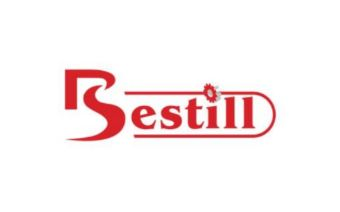

Друзья, мы на выставке! И здесь собрали всё, что нужно для вашей техники и работы в сезон. Смотрите: леска для триммера — прочная, износостойкая, для…

MITEX 2026 · Россия · Стенд 8С1102
Карточка проверена 10 ноября 2026, 09:25 · Источник ↗ · Снимок оригинальной карточки ↗
Производство и продажа садового оборудования и их запчастей. Производство и продажа садового инвентаря, садовой техники, расходных материалов для сада. Также производство и продажа ручного, слесарно-монтажного и электроинструмента. Исследования и разработки.
Контакты Телефон: +79504245410 E-mail: sales3@bestill.ru Адрес: 660021, Россия, Красноярский край, Красноярск, ул. Ленина, д.133 Веб-сайт: https://bestill.ru E-mail: sales3@bestill.ru Телефон: +79504245410

В доступной карточке нет видео или документов. Смотрите сайт участника.
До десяти последних сообщений каждого найденного канала. Оригинал открывается по ссылке.
Друзья, мы на выставке! И здесь собрали всё, что нужно для вашей техники и работы в сезон. Смотрите: леска для триммера — прочная, износостойкая, для…
Леска для триммера «круг», красная, 2,0 мм, моток 15 м, 100% нейлон: B2B-критерии. Цвет — маркировочная особенность, не показатель качества; важнее стабильность диаметра и сечения…

Леска для триммера «квадрат», красная, 2,7 мм, моток 15 м, 100% нейлон: B2B-критерии. Цвет — маркировочная особенность, не показатель качества; важнее стабильность диаметра и сечения…
Реклама. ООО «Северное сияние», ИНН 2460128187, ERID: 2VtzqvhCqu8 Уважаемые партнеры и клиенты! Компания ООО "Северное сияние" приглашает вас посетить наш стенд в рамках Международной выставки…
Леска для триммера «квадрат», серая, 2,0 мм, моток 15 м, 100% нейлон: B2B-критерии. Цвет — маркировочная особенность, не показатель качества; важнее стабильность диаметра и сечения…
Леска для триммера «квадрат», серая, 2,7 мм, моток 15 м, 100% нейлон: B2B-критерии. Цвет — маркировочная особенность, не показатель качества; важнее стабильность диаметра и сечения…
Леска для триммера «звезда», красная, 2 мм, моток 15 м, 100% нейлон: B2B-критерии. Цвет — маркировочная особенность, не показатель качества; важнее стабильность диаметра и сечения…
Леска для триммера «витой квадрат» 1,6 мм: B2B-критерии. Тонкий диаметр — рассматривать для лёгких электро- и аккумуляторных триммеров, если допускает производитель. Для парка важна стабильность…
Круглая леска для триммера 1,6 мм в мотке 15 м — расходник для бытовых триммеров. Диаметр подходит для молодой травы, сорняков и мягкой растительности. Круглое…

Леска для триммера — квадрат, 2,0 мм, моток 15 метров В видео показана леска для триммера квадратного профиля. Диаметр — 2,0 мм, длина мотка —…